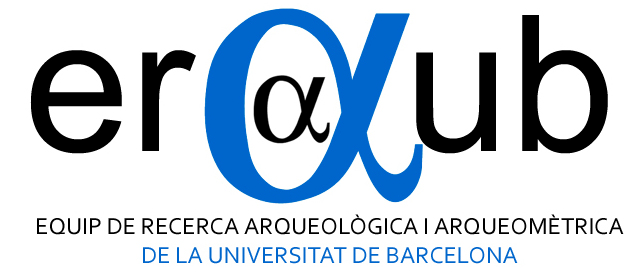

Andreas Angourakis
https://andros-spica.github.io/PhD-defense/index.html?print-pdf (printable version)

Outline
- Presentation
- Introduction
- Analysis of archaeometric data of ceramics
- Simulation of socioecological systems
- Conclusions
1.
Presentation
Research context
Surkhan Darya Region, UzbekistanIPAEB (2006-)
Simulpast (2011-17)
CAMOTECCER (2013-16)
CERAC (2017-20)
Main objective
Define and explore formally a set of socioecological and technocultural mechanisms, postulated as explanations for patterns documented in the history and archaeology of agropastoral societies in arid Afro-Eurasia.
Specific goals
Data analysis
- Explore methods
- Consolidate protocols
- Validate methodology
- Publish
Computational modelling and simulation
- Define mechanisms
- Design models
- Simulate scenarios
- Publish
+ open and reproducible
2.
Introduction
Theoretical-methodological framework
- Procesualism
- Explanation and generalisation
- Complexity science
- Quantitative & Digital Archaeology
- Multivariate statistics | Agent-based modelling
- Virtual laboratory
arid Afro-Eurasia

Afro-Eurasia historical regions
Patterns and mecanisms
- Alternation between the predominance of sedentary agriculture and nomadic/semi-nomadic pastoralism
- Territorial integration
- Emergence of cooperative institutions
3.
Analysis of archaeometric data of ceramics
Goals
Publications
Martínez Ferreras, V., Angourakis, A., Hein, A., Gurt Esparraguera, J.M., Sverchkov, L.M. and Sánchez del Corral, A., 2016.
Pottery in Hellenistic tradition from ancient Bactria: The Kurganzol fortress (Uzbekistan, Central Asia).
Journal of Archaeological Science: Reports, 21:1044-1054.
https://doi.org/10.1016/j.jasrep.2016.11.049.
Angourakis, A., Martínez Ferreras, V., Torrano, A. and Gurt Esparraguera, J.M., 2018.
Presenting multivariate statistical protocols in R using Romanwine amphorae productions in Catalonia, Spain.
Journal of Archaeological Science, vol. 93, pp. 150-165.
https://doi.org/10.1016/j.jas.2018.03.007.
Martínez Ferreras, V., Gurt Esparraguera, J.M., Ariño Gil, E., Sánchez del Corral, A., Hein, A., Angourakis, A. y Pidaev, S.R., [en prensa].
Assessing cultural patterns in ancient Termez (Uzbekistan) through the pottery: from the Hellenistic tradition to the nomadic influences.
Geoarchaeology, XX(X):XX-XX.
Geochemical compositional data
- X-ray fluorescence readings (XRF-WD) by V. Martínez
- Quantitative (numeric, continuous) data
-
but also compositional
- variation at different scales
- intrinsic correlation

Petrographic data
4.
Simulation of socioecological systems
Publications
Angourakis, A., Rondelli, B., Stride, S., Rubio–Campillo, X., Balbo, A.L., Torrano, A., Martínez, V., Madella, M.; Gurt, J.M. 2014,
Land Use Patterns in Central Asia. Step 1: The Musical Chairs Model,
Journal of Archaeological Method and Theory, 21: 405-425.
http://dx.doi.org/10.1007/s10816–013–9197–0.
Angourakis, A. 2014,
Exploring the oases of Central Asia: A model of interaction between mobile livestock breeding and sedentary agriculture,
in Antela-Bernárdez, B. and Vidal, J. (eds.) Central Asia in Antiquity: Interdisciplinary Approaches,
BAR International Series 2665, pp. 3-16.
Angourakis, A., Salpeteur, M., Martínez, V., and Gurt, J.M. 2017.
The Nice Musical Chairs model. Exploring the role of competition and cooperation between
farming and herding in the formation of land use patterns in arid Afro-Eurasia.
Journal of Archaeological Method and Theory, 21: 405-425.
http://dx.doi.org/10.1007/s10816-016-9309-8.
Angourakis, A., Santos, J.I., Galán, J.M. and Balbo, A.L., 2015.
Food for all: An agent-based model to explore the emergence and implications of cooperation for food storage.
Environmental Archaeology, vol. 20, no. 4, pp. 349-363.
http://dx.doi.org/10.1179/1749631414Y.0000000041.
5.
Conclusions
Gaming Artificial Anasazi
Applying immersive game design and storytelling to an agent-based model in archaeologyAndreas Angourakis @AndrosSpica & Shawn Graham @electricarchaeo
https://andros-spica.github.io/TIPC2-Angourakis-Graham-2018/index.html?print-pdf (printable version)
THANK YOU!